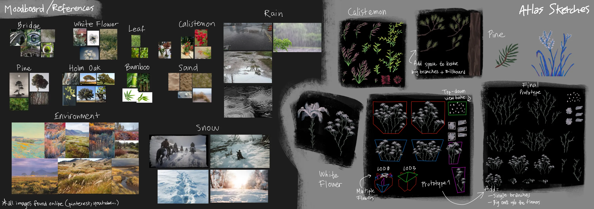

2025/2-5
Unreal Engine, 3DS Max, Blender, Substance Designer, Substance Painter, Houdini, Gaea, ZBrush, Adobe Photoshop, Illustrator, InDesign, DaVinci Resolve
◆ I did not use generative AI.
What I did Excluding what's on the "Assets used" section, I made everything:
- Interactive effects, shaders, wind, rain, snow, water surfaces
- Terrain generation, environment, foliage, bridge, textures, materials
- Lighting
- Camera work
- Tool development
- And more
Assets used The rocks, HDRI, and music are assets created by other artists:
- Desert Western Rocks/Cliffs collection by Quixel on Fab
- Minedump Flats HDRI by Dimitrios Savva and Jarod Guest on PolyHaven
- Music: Cinematic Inspiration by yourtunes on Pixabay
- Music: Realize Your Dreams by Top-Flow on Pixabay
The video for the "Spline Bridge Tool" includes three bridge models as examples:
- Bridge meshes by TAK0YT0 on Fab
- Science Fiction Tram/Train Bridge meshes by Aroba on Fab
- LowPoly Manhattan Bridge by Sssb on Fab
Weather・Environment VFX
This is my graduation project. I developed three tools to aid in the creation of environments. To showcase their potential, I also made an environment.
I would like to express my gratitude to everyone who supported me throughout the development of this project. Without your support, this project would not have taken the form it has today. In particular, I would like to thank Jaume Planes, Héctor Esteban, Ryota Chishima, the UT-HUB team, my classmates, and, of course, my family and friends.

Dynamic Weather Tool
The Dynamic Weather Tool makes adding wind, rain, and snow to a scene a breeze (wink, wink). You can adjust various parameters, including wind direction, speed, and turbulence. Additionally, you can configure wind gusts, specifying their intensity, duration, and frequency.
Rain and snow have similar configuration options such as defining the area, the number of particles, color, speed, fog color, and opacity. You can decide whether to include lightning, as well as its frequency. Each system includes transitions that can be customized in terms of duration and appearance.
Furthermore, you can control how meshes react to wind, rain, and snow using the easy-to-use material functions provided. There are many parameters to customize these effects to suit the needs and look of your project.

Spline Bridge Tool
This is a simple spline tool that lets you build a bridge along a spline with your own meshes. You can adjust parameters to set the pillars' spacing and alignment, as well as scatter other meshes on top of the bridge, such as streetlamps. You can also set a maximum slope to ensure the bridge is walkable by the player.
Procedural Grass Tool
Creating grass with the Procedural Grass Tool is fast and easy. Inspired by the grass system in Ghost of Tsushima, you can edit the shape of the grass by adjusting the Bézier curve that defines it. You can also change the grass blade's color, width, and texture. You can group the grass in clumps and adjust the scale, rotation, and color based on said clumps. Furthermore, you can also adjust the wind animation and the player interaction animation.
Documentation
All of the tools are commented in-engine and come with a thorough Documentation.

Interaction Subtool
Both the dynamic weather tool and the grass tool utilize the interaction sub-tool I created. It is just as easy to use as the other tools. Simply drag and drop the blueprint into the scene, and you will be able to sample the player's interaction with the landscape and foliage on any material. This includes both directional trails and persistent stepping trails. The blueprint uses a scene capture to track the movements of both the player and any other actors.
Lighting
This is my process for lighting a scene:
１．I start by adjusting the position, color, and intensity of the directional light to establish the initial
mood. If I plan on using an HDRI, I also add it here.
２．I add detailed lighting to create depth and contrast, enhancing the composition and guiding the viewer's
eye.
３．I adjust the Post Process Volume in Unreal Engine to further convey the desired mood.
４．I color grade the footage using DaVinci Resolve or Photoshop.
Foliage
I modeled the foliage in 3DS Max and created most of the textures using Substance Designer. Additionally, I
scanned and edited some leaves to use as textures. My process is as follows:
１．To explore the shapes of the plant, I make a sketch of the texture atlas.
２．I test the texture atlas with a prototype and make adjustments to the sketch.
３．After testing the prototype and confirming all the pieces needed for my atlas, I create a high-poly
model.
４．I bake the high-poly model to a texture atlas. I finalize the game-ready model in 3DS Max.

In terms of triangle count and LOD levels, there are two categories of foliage, not including grass: trees and smaller plants. Below is a breakdwon of the triangle count for each type at every LOD level. Both types of foliage use the same shader. I baked some information into a UV channel that is used by the shader to cheaply animate the foliage. The main difference between the high and low shaders is that the latter excludes the player interaction animation.


Textures
I created all the textures for the landscape, tools, foliage and other assets using Substance Designer, Substance Painter, and Photoshop. Taking advantage of the procedural nature of Designer, I made all my textures customizable with graph parameters, allowing me to easily adjust and create variations of the same texture. Both the sand and snow textures have a glint effect, which was achieved using a custom material function in Unreal.